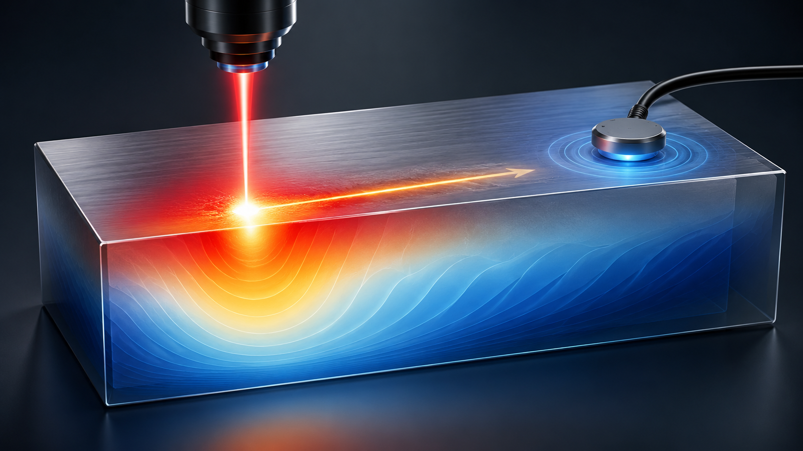
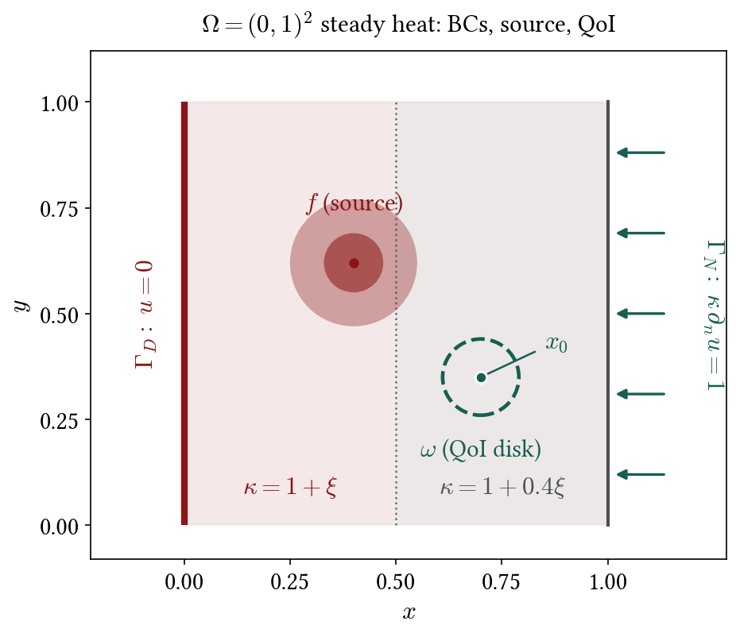
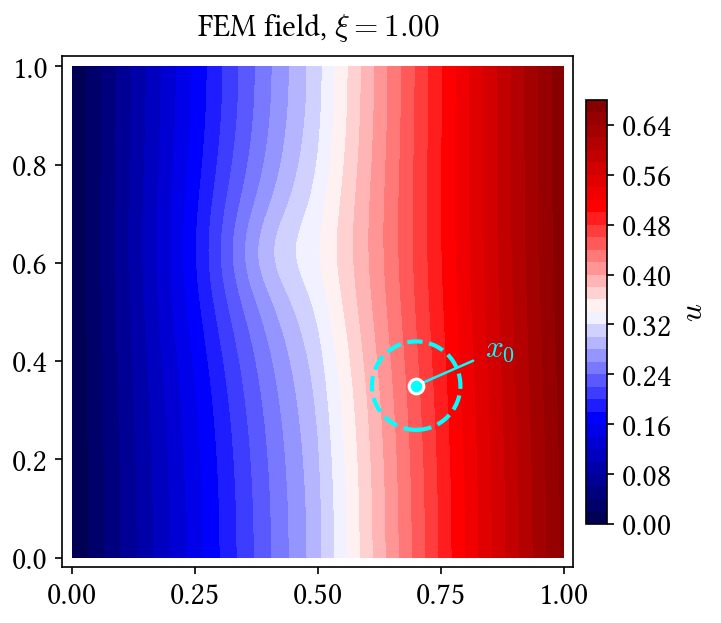
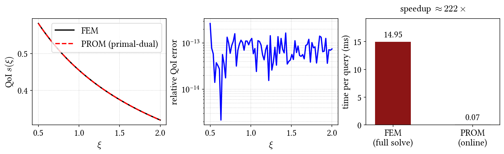
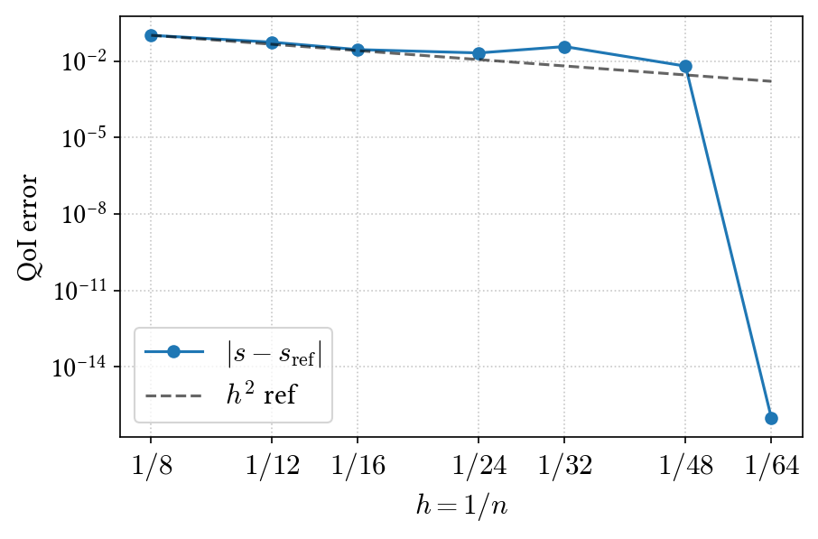

Goal-Oriented Projection-Based Model Order Reduction
Zahm et al. (2017) · 2D Steady Heat Example
Hanfeng Zhai
Department of Mechanical Engineering, Stanford University
June 2026
- Physics: a heat source scans the part while material conductivity or loading varies with parameter \(\xi\).
- Goal: predict one probe quantity \(s(\xi)\) accurately instead of storing the full temperature field.
- Challenge: every new \(\xi\) requires a costly FEM solve \(\Rightarrow\) build a fast reduced surrogate for \(s(\xi)\).

- Problem Formulation
- Variational Derivation
- Goal-Oriented Projection-Based MOR
- Functional Analysis and inf–sup Stability
- Petrov–Galerkin Projection
- Primal–Dual Estimators
- Certified Error Bounds & Greedy Enrichment
- Numerical Demonstration
- Summary and Takeaways
Use ← → keys, swipe, or click the arrows to navigate.
- \(u\): temperature; \(\kappa(x,\xi)\): parametric conductivity; \(f\): source; \(g\): flux.
- \(\xi\): scalar scenario parameter (distinct from spatial coordinate \(x\)).
- \(s\): disk average on \(\omega\) (bounded on \(H^1\); point evaluation is not).

- \(v\): test function; integration by parts transfers one derivative onto \(v\).
- \(\mathcal{S}=\mathcal{V}=H^1_{0,\Gamma_D}\): essential BC \(v=0\) on \(\Gamma_D\); natural flux \(g\) enters \(\ell(v)\).
- Continuity of \(a\) and \(\ell\) with Poincaré's inequality yields coercivity \(\alpha > 0\).
- Lax–Milgram guarantees a unique, continuously stable weak solution \(u\in\mathcal{S}\).
- \(\langle \cdot,\cdot \rangle\): duality pairing with \(A:\mathcal{S}\to \mathcal{V}'\) and \(b\in \mathcal{V}'\).
- Trial \(u\in\mathcal{S}\), test \(v\in\mathcal{V}\); reduced spaces \(\mathcal{S}_h\subset\mathcal{S}\), \(\mathcal{V}_h\subset\mathcal{V}\) with \(u_h\in\mathcal{S}_h\), \(v_h\in\mathcal{V}_h\).
- Linear output \(s=Lu\) (scalar in the 2D demo; vector \(Z=\mathbb{R}^l\) in Zahm et al.).
- \(\xi\): physical scenario parameter (conductivity in demo; loads or BCs in general).
- Many-query workflows (design, UQ, control) evaluate thousands of \(\xi\); full FEM is too costly.
- Offline–online split: invest offline snapshots at \(\xi_i\) to make every online query \(s(\xi)\) millisecond-fast.
- Target: approximate the probe map \(\xi \mapsto s(\xi) = L(\xi)u(\xi)\) directly via reduced spaces \((\mathcal{S}_h, \mathcal{V}_h, W_k^{Q})\).
- Offline: construct trial, test, and dual bases from snapshots. Online: solve tiny projected systems per \(\xi\).
- \(A^{*}:\mathcal{V}\to\mathcal{S}'\) maps test directions to trial functionals; \(L^{*}:Z'\to\mathcal{S}'\) encodes sensor weights.
- \(Q\in\mathcal{L}(Z',\mathcal{V})\): dual influence operator solving the adjoint PDE for unit output loads.
- Duality identity \(s = Lu = Q^{*}b\): exact \(u\) or exact \(Q\) alone recovers the output \(s\).
- Goal-oriented: reduced bases target \(s=Lu\) rather than full-field energy alone.
- Three spaces: Petrov–Galerkin \(\mathcal{S}_h\neq\mathcal{V}_h\) plus dual space \(W_k^{Q}\).
- Vector output: \(s\in Z\) via operator dual \(Q\in\mathcal{L}(Z',\mathcal{V})\).
- Certified bounds: computable \(\Delta(\xi)\) from primal and dual residuals.
- Greedy enrichment: sample snapshots at \(\arg\max_\xi\Delta(\xi)\).
- Estimator ladder: Petrov–Galerkin (pg) → primal–dual (pd) → saddle-point (sp).
Estimator ladder (pg → pd → sp)
Petrov–Galerkin (pg): \(s_{\mathrm{pg}} = Lu_h\) directly from the projected primal state \(u_h\in\mathcal{S}_h\).
Primal–dual (pd): \(s_{\mathrm{pd}} = Lu_h + Q_h^{*}(b - Au_h)\) corrects \(Lu_h\) using the residual and dual approximation \(Q_h\).
Saddle-point (sp): couples \((\mathcal{S}_h, \mathcal{V}_h, W_k^{Q})\) in a single variational saddle-point system (Prop. 2.10) to achieve quadratic error reduction.
- \(\alpha>0\) (Banach–Nečas–Babuška): links small residuals directly to small state errors.
- Handles general \(\mathcal{S}\neq\mathcal{V}\) (Petrov–Galerkin); symmetric heat (\(\mathcal{S}=\mathcal{V}\)) recovers Lax–Milgram.
- Residual \(Au_h-b\) is orthogonal to test space \(\mathcal{V}_h\) (\(\mathcal{S}_h\neq\mathcal{V}_h\) in general).
- Quasi-optimality holds whenever test-space defect \(\delta_{\mathcal{S}_h,\mathcal{V}_h}<1\) (Prop. 2.1).
Test-space defect \(\delta_{\mathcal{S}_h,\mathcal{V}_h}\) and discrete inf–sup \(m_h\)
\(\delta_{\mathcal{S}_h,\mathcal{V}_h}\) measures the sine of the angle between \(A\mathcal{S}_h\) and the Riesz lift of \(\mathcal{V}_h\); keeping \(\delta_{\mathcal{S}_h,\mathcal{V}_h} < 1\) is equivalent to a strictly positive discrete inf–sup constant \(m_h > 0\).
- Output error scales with the product of dual test error \(\delta^L_{\mathcal{V}_h}\) and trial best-approximation error.
- Compliant case (\(\mathcal{S}=\mathcal{V}\), \(\mathcal{V}_h=\mathcal{S}_h\), \(Lu=\langle b,u \rangle\)): quadratic accuracy \(|s-Lu_h|\le\left\Vert u-u_h \right\Vert_{\mathcal{S}}^2\).
- \(\mathcal{V}_h\) must simultaneously stabilize projection on \(\mathcal{S}_h\) and capture \(\mathrm{range}(A^{-*}L^*) = \mathrm{range}(Q)\).
- The 2D heat demo uses a shared snapshot space; Zahm et al. decouple \(\mathcal{V}_h\neq\mathcal{S}_h\) for non-symmetric problems.
- Physical meaning: for the probe average on \(\omega\), \(Q\) is the thermal response to a unit source on \(\omega\).
- Goal sensitivity: \(Q\) identifies exactly which spatial modes of the residual \(b-Au_h\) perturb \(s\).
- Reduced approximation: building a dedicated dual space \(W_k^{Q}\subset\mathcal{V}\) decouples output accuracy from \(\mathcal{V}_h\).
- \(\tilde s\) augments the primal prediction \(Lu_h\) with a dual-weighted residual correction \(Q_h^{*}(b-Au_h)\).
- Uses three reduced spaces: trial \(\mathcal{S}_h\), test \(\mathcal{V}_h\), and dual \(W_k^{Q}\).
Saddle-point estimator remark (Prop. 2.10)
Zahm et al. (Prop. 2.10) also formulate a saddle-point estimator \(s_{\mathrm{sp}}\) solving jointly over \((\mathcal{S}_h, W_k^{Q})\), avoiding separate test-space coupling while retaining product-of-errors decay.
- \(\Delta(\xi)\) is computable online from primal residual \(\times\) dual residual divided by lower bound \(\alpha(\xi)\).
- Certification: true error never exceeds \(\Delta(\xi)\), so effectivity \(\Delta(\xi)/\left\Vert s-\tilde s \right\Vert_Z \ge 1\).
- Select worst parameter \(\xi^\star\) via \(\Delta(\xi)\), compute full primal \(u(\xi^\star)\) and dual \(Q(\xi^\star)\), and enrich bases.
- Iterate until \(\max_{\xi\in\Xi}\Delta(\xi)\) falls below the target tolerance.
Enrichment variants (Alg. 1–2) & test-space preconditioner (Eq. 44)
Zahm et al. compare alternate vs. simultaneous primal–dual enrichment (Alg. 1–2) and construct the test space \(\mathcal{V}_h\) from a parameter-independent preconditioner \(P_m(\xi) \approx A(\xi)^{-1}\) (Eq. 44).
- Full 2D FEniCS FEM solve at \(\xi = 1\); QoI \(s = \bar{u}_\omega\) averages temperature over probe disk \(\omega\).
- PROM predicts \(s(\xi)\) across parameters \(\xi\in[0.5,2]\) without re-solving the full mesh.



- Implemented: affine parametric \(A(\xi)\) and online primal–dual estimator \(s_{\mathrm{pd}}\).
- Full Zahm et al. framework: separate \(\mathcal{V}_h\), saddle-point \(s_{\mathrm{sp}}\), and greedy \(\Delta(\xi)\) enrichment.
- Mesh check: FEM reference achieves \(O(h^2)\) QoI convergence on \(\omega\).
- State field \(u\) is intermediate; vector output \(s=Lu\) with certified bound \(\Delta(\xi)\) is the objective.
- Weak formulation \(Au=b\) and inf–sup stability \(\alpha > 0\) yield rigorous a posteriori bounds.
- Primal–dual correction multiplies primal and dual errors, driving relative QoI error to \(\sim 10^{-13}\).
- On 80 queries of 2D steady heat, online PROM delivers \(\approx 222\times\) speedup over full FEM.
O. Zahm, M. Billaud-Friess, and A. Nouy, Projection-based model order reduction methods for the estimation of vector-valued variables of interest, SIAM J. Sci. Comput. 39(4), A1647–A1674 (2017).
Thank you.
Special thanks to José Hasbani & Obed Camacho for discussions.